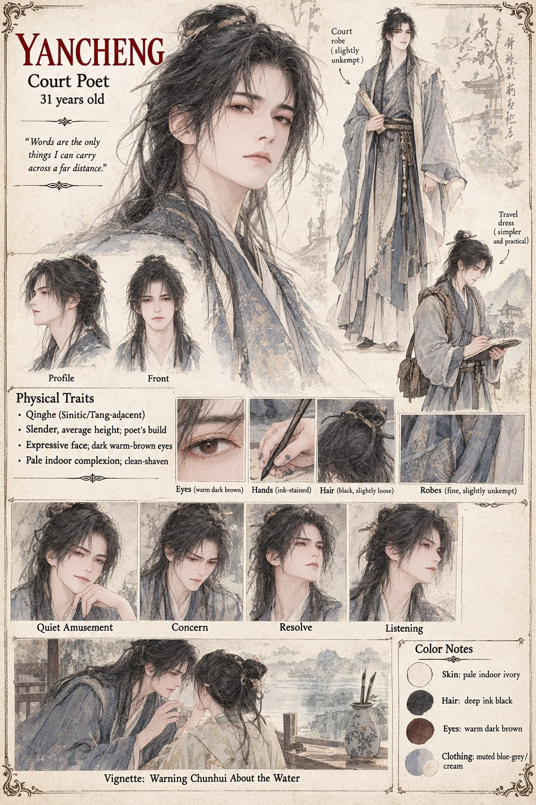

Yancheng
Court Poet · 31 years old
Court poet, close enough to Mingxuan's household to be treated as family rather than a guest, and in love with Chunhui in the unhurried way of a man who assumes he has years left to say so properly. He means nothing by mentioning, in passing, the odd story going around about water in a finer bottle than Suyin's own household keeps — and never learns that the words reach Queen Meilan's own household within the day, or what they cost the woman he was talking about.
He helps Duan and Mingxuan question Cao at Wanling once the war has made him useful for more than verse, and dies afterward on a courier's road, killed by his own side under General Zhuo's standing order against capture. No chronicle in Qinghe ever learns whose arrow it actually was; the histories remember him only as a poet-martyr, cut down by the Queen's forces for carrying loyalist words.
“Words are the only things I can carry across a far distance.”